插件管理器coc
回忆
- 上次了解了nerdtree
- 老牌的资源管理器
- 但是好像好久不更新了
- 有什么替代品么？

- 好像是一个叫做coc-explorer的东西
- 那是个啥？
分析
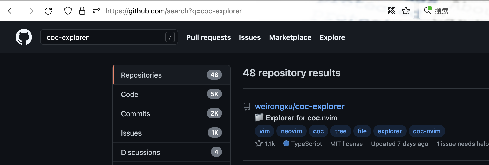
- 找到仓库
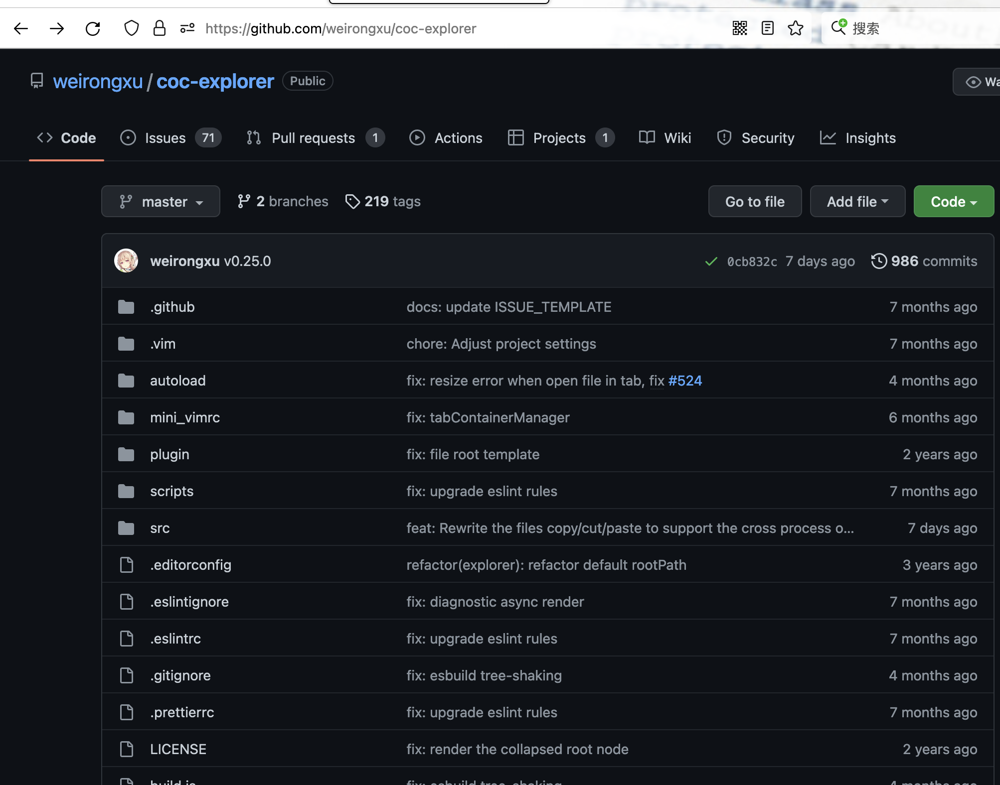
- 这个coc-explore又基于coc
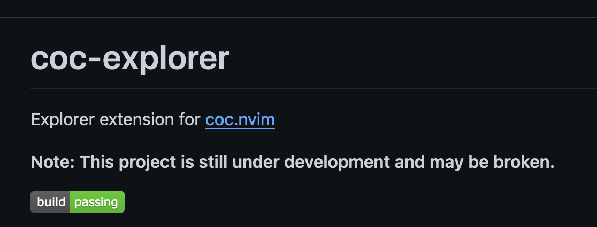
插件平台
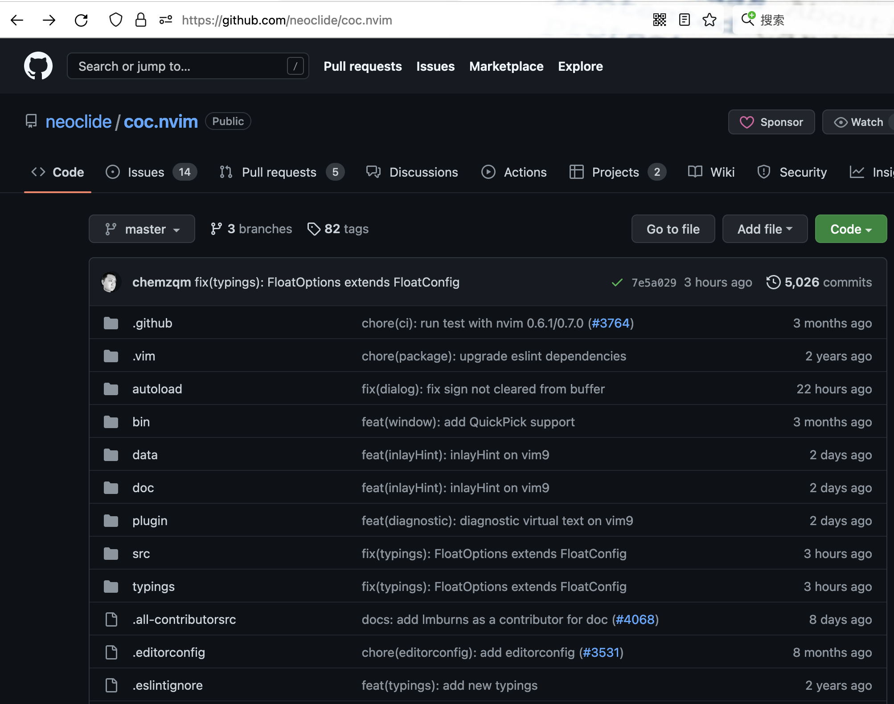
- 这样好像是个插件平台
- 我们选择编译安装
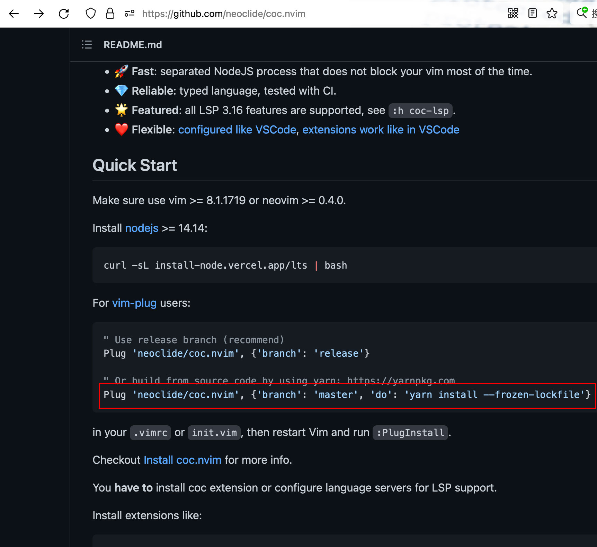
安装
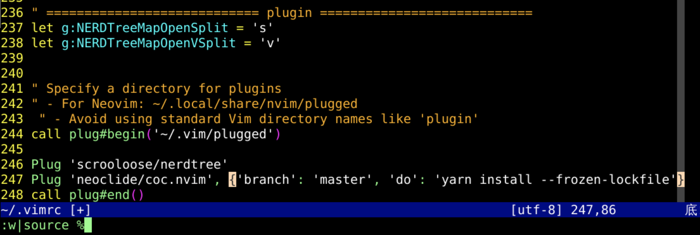
- 先保存并运行 ~/.vimrc
- 如果提示报错了的话
- 先新建文件夹
- mkdir -p ~/.vim/plugged
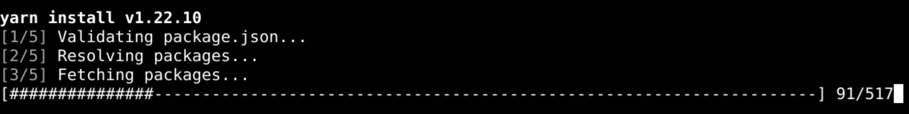
查看状态
- PlugStatus
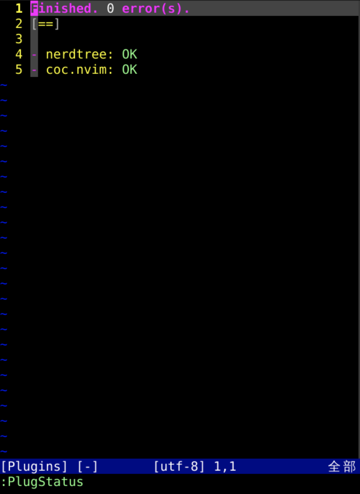
- 这样就装上了coc这个插件平台
- 首先可以进行一些默认配置
配置
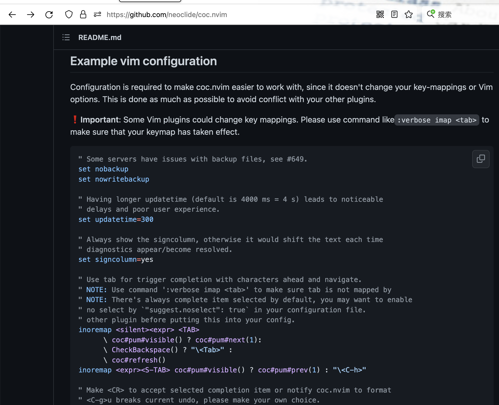
- 把README中的推荐配置
- 粘贴到~/.vimrc结尾
- 然后又应该如何安装插件呢？
运行配置
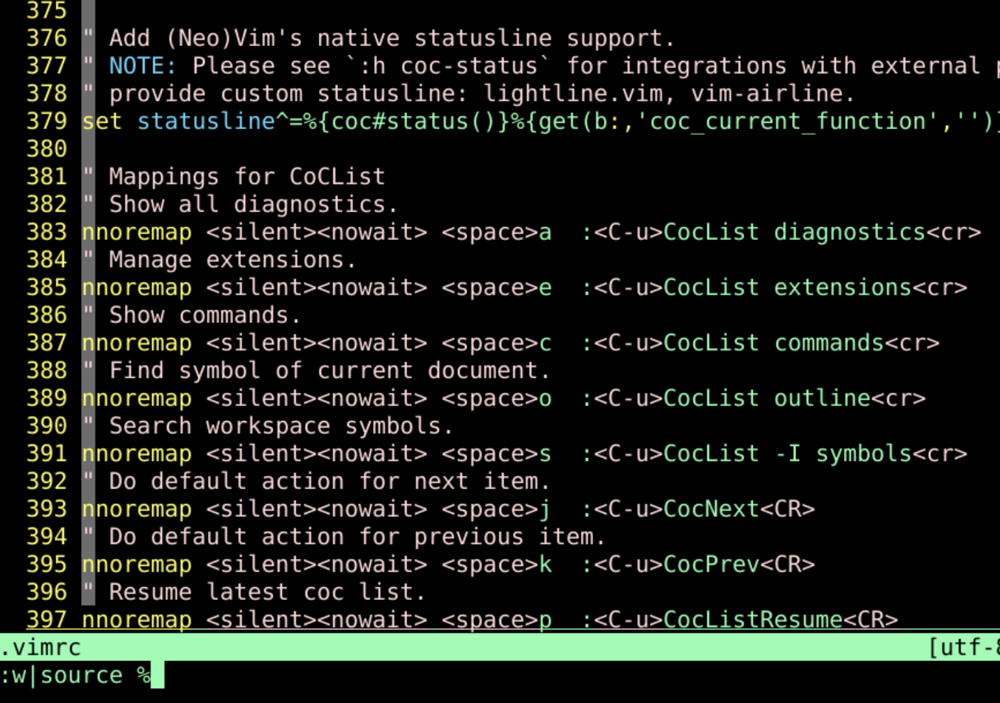
- 左边会加一个侧边栏
安装插件
:q先退出左边这个浮动窗口:CocInstall coc-json- 安装json插件
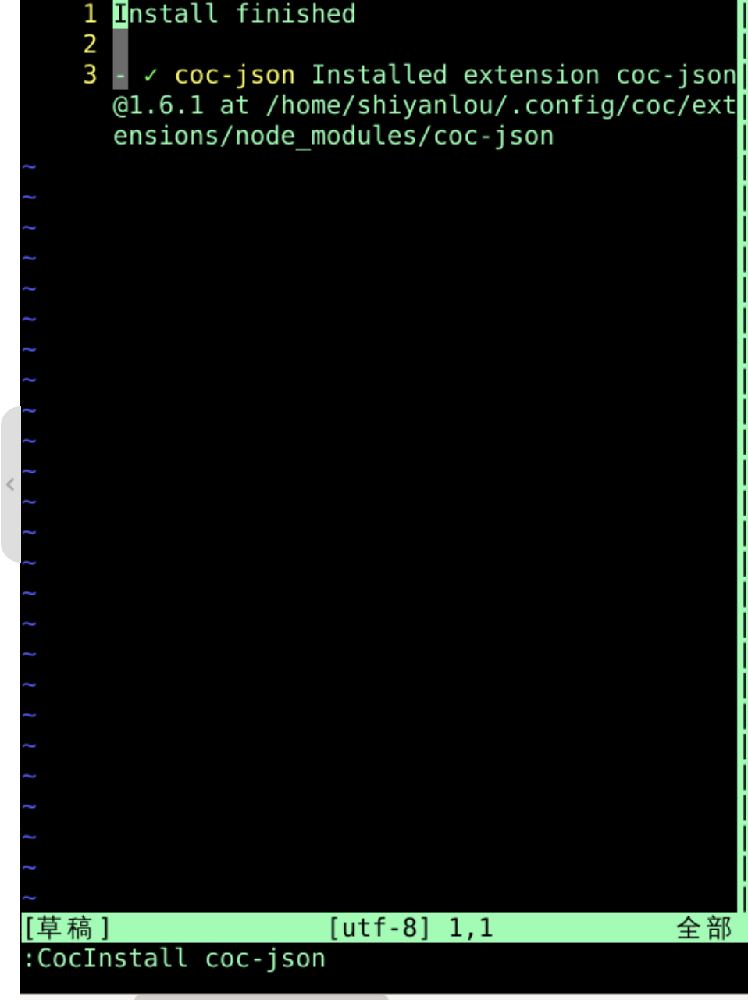
找到插件位置
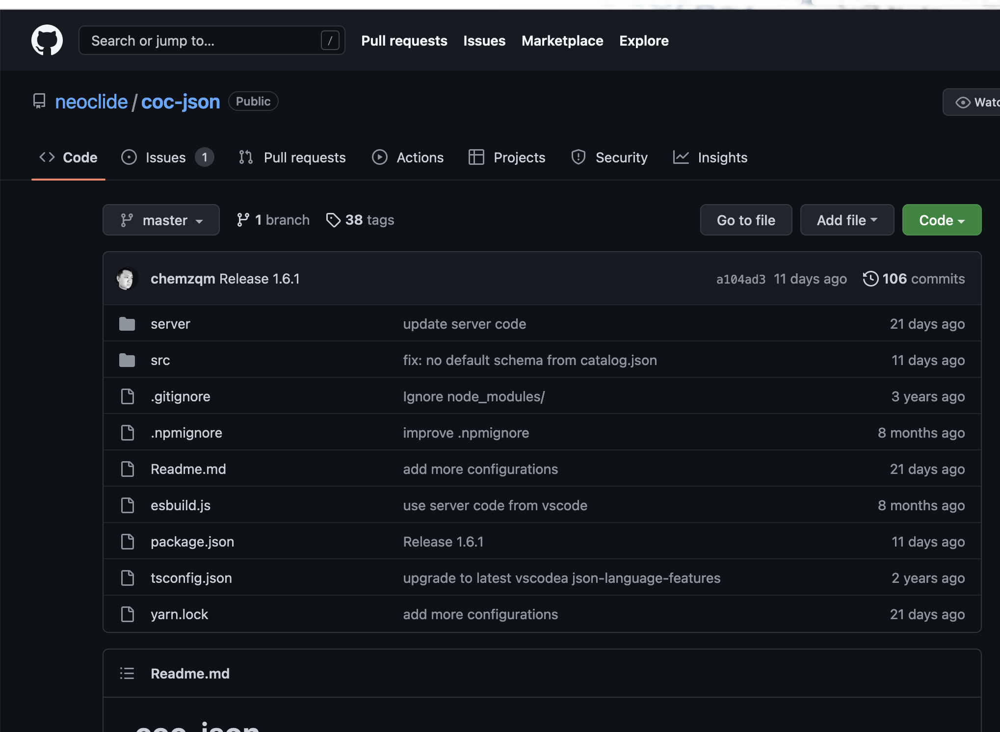
- 我们写一个json
报错
- 写一个错误的json
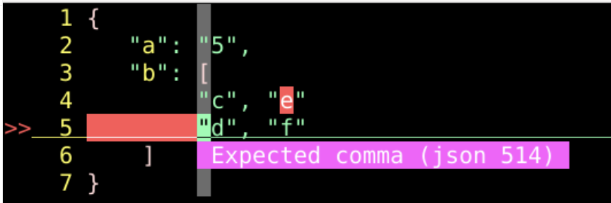
- 他会报错
- 报错文本如果看不清楚的话
- 在~/.vimrc中
- :highlight CocErrorFloat ctermfg=White guifg=#ffffff
- 除了coc-json外
- coc还给各种文件格式提供
- 报错
- 补全
- 提示
- 基于vscode的lsp
- 效果和vscode一致
总结
- 我们这次研究了新插件平台Coc
- Coc可以用vim-plug安装
- 安装之后
- 可以在Coc之上再安装各种插件
- 比如coc-json
- 可以进行
- 报错
- 补全
- 提示
- 各种操作
- 好像真的不错？还有啥好玩的？🤔
- 下次再说！👋